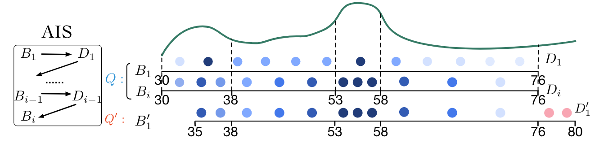
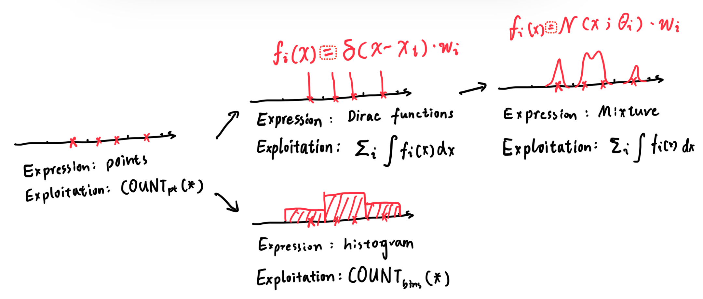
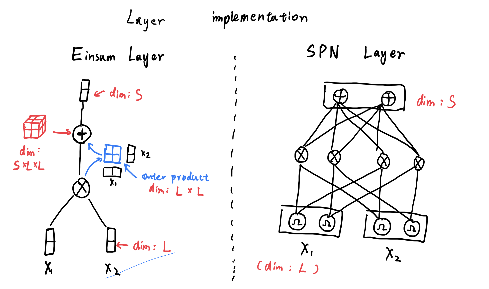

## Einsum Networks: Fast and Scalable Learning of Tractable Probabilistic Circuits Peharz et al. ICML 2020 --- ## Guidelines * Introduction & Background * Trainable PC & Einsum Network * Experiments --- ## Intro The good'o CE again... * Relation $T$ with $N$ tuples and $m$ attributes: $\lbrace A_1, A_2, \cdots , A_m \rbrace$. * Each tuple $t \in T$ is $t = (a_1, a_2, \cdots, a_m)$. * $\theta$ is the predicate of the query, $\theta(t) = 1$ if the $t$ satisfies the query, otherwise $\theta(t) = 0$ * $\mathrm{Car}(\theta) = \sum_{t \in T} \theta(t)$ * $\mathrm{Sel}(\theta) = \mathrm{Car}(\theta) / N$ ---- ## Problems * How can we properly express the dataset? * How can we exploit the expression? ---- ## Histogram * Expression: $H_i \sim A_i, P(X) = \prod_{i} H_i(x_i)$ * Exploitation: direct integration <img class="r-stretch" src="./assets/PP20241108/截屏2024-11-08 09.34.07.png"> ---- ## DeepDB * Expression: Relational SPN * Exploitation: direct integration <img class="r-stretch" src="./assets/PP20241108/截屏2024-11-08 09.44.52.png"> ---- ## FLAT * Expression: Factorized Split SPN * Exploitation: direct integration <img class="r-stretch" src="./assets/PP20241108/截屏2024-11-08 09.54.00.png"> ---- ## Naru * Expression: Auto-regressive model * Exploitation: progressive sampling <img class="r-stretch" src="./assets/PP20241108/截屏2024-11-08 10.02.31.png"> ---- ## FACE * Expression: Normalizing Flow * Exploitation: Adaptive Importance Sampling <div class="r-stack"> <img class="fragment current-visible" src="./assets/PP20241108/截屏2024-11-08 10.06.24.png">  </div> --- ## Dilemma? Tractable VS. Expressive <p class="fragment"> Mixture is good, make it deep! </p> <img class="r-stretch" src="./assets/PP20241108/截屏2024-11-08 10.25.39.png"> ---- ## Borrowing the ideas from Histogram  ---- ## Naive mixture model * $\mathbf N_i = \lbrace \mathcal N(X_i;\theta_j)| 0 < j < l_i \rbrace$ : a set of distributions of variable $X_i$ * $P(\mathbf X) = \sum_{\mathcal N_k \in \prod_i \mathbf{N}_i} w_k\mathcal{N}_k(\mathbf X)$ : a Gaussian Mixture > While it takes $O(l^n)$ time to infer / train, it is very inefficient. ---- ## Build such mixture from scratch <img class="r-stretch" src="./assets/PP20241108/截屏2024-11-08 11.20.19.png"> ---- ## Constraints * Smoothness: children of Sum node have same scope * Decomposability: children of Product node have non-overlapping scope <img class="r-stretch" src="./assets/PP20241108/截屏2024-11-08 11.25.35.png"> ---- ## RAT-SPN <img class="r-stretch" src="./assets/PP20241108/截屏2024-11-08 11.31.53.png"> --- ## Einsum Network Using Einsum layer to provide a unified interface as NN, thus can be empowered by GPU:  ---- ## Numeric Stability The computation of Einsum is denoted as: $$S_k = \mathbf W_{kij} N_iN_j$$ <img class="r-stretch" src="./assets/PP20241108/截屏2024-11-08 11.46.41.png"> ---- ## The "log-sum-exp" trick Rewrite the equation: $$\log S_k = \log \sum_{i, j} W_{kij}\exp(\log N_i)\exp(\log N_j)$$ Let $a = \max_i \log N_i$, $a' = \max_j \log N_j$, we have: $$\log S_k = a + a' + \log \sum_{i, j} W_{kij}\exp(\log N_i - a)\exp(\log N_j - a')$$ --- ### Experiment#1-Correctness <img class="r-stretch" src="./assets/PP20241108/截屏2024-11-08 12.07.07.png"> ---- ### Experiment#2-Efficiency <img class="r-stretch" src="./assets/PP20241108/截屏2024-11-08 12.10.27.png"> ---- ### Experiment#3-Capability <img class="r-stretch" src="./assets/PP20241108/截屏2024-11-08 12.12.23.png"> --- # Thank you for Listening! Changkai MAI 2024-11-08